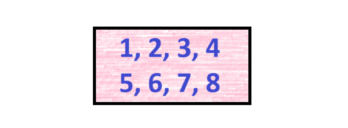
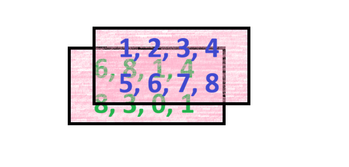
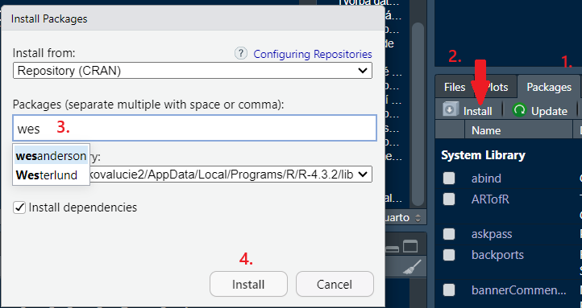
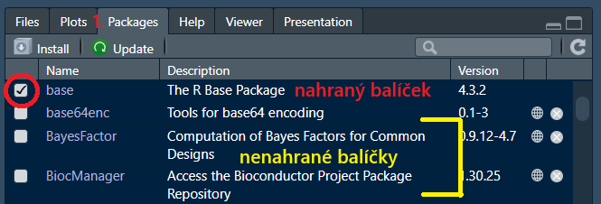

Struktury a indexace
Zpracovávání výzkumných dat pomocí jazyka R
Program
- opakování z minulé hodiny
- kontrola domácího úkolu
- funkce v R
- datové struktury v R
- balíčky
- indexace
Kontrola domácí práce
vytvoření RProjektu
nový R skript
nahrání uložených dat
Jde nahrát RData soubor i jiným způsobem? Jaké jsou nevýhody tohoto přístupu?
výpočet toho, kolik zaměstnanců s daným platem jde nabrat na specifikovanou dobu měsíců
A nešlo by to jinak?
Datové struktury v R
Vektor
série za sebou jdoucích hodnot totožného datového typu
vektor o jedné hodnotě je někdy nazýván skalár
jednodimenzionální (důležité hlavně při vyhledávání)
při použití více datových typů dochází k nucené konverzi do jednotného typu
Jakými jinými způsoby můžeme vektory vytvořit?
symbol
:vytvoří sérii čísel v daných mezích- rozestup vždy po jedné
- funkce
cspojí hodnoty jakéhokoliv typu do vektoru
- způsobů je mnohem více, tyto se ale hodí znát
Potenciální zádrhely
Co se stane po projetí následujícího kódu?
Datový typ vektoru bude automaticky převeden na charakterový, jelikož vektor v sobě kombinuje několik datatypů dohromady.
Jaký bude datový typ následujícího vektoru?
NA označuje chybějící hodnotu, nikterak neurčuje samotný datový typ hodnoty.
Pojmenovávání hodnot
Jednotlivé hodnoty ve vektoru (ale i zbylých datových strukturách) je možné si pojmenovat.
[1] "jan" "dan" "sam"Co znamená pojmenováná?
Při pojmenovávání připojujeme specifické hodnotě či sérii hodnot určitý štítek. Nejenomže popisuje vlastnost hodnot(y), kterou pojmenovává, ale zárověň ho lze použít i k vyhledávání (indexování) jednotlivých hodnot. Více o indexování si řekneme v následující sekci.
Pojmenování není to samé co přiřazování; nevytváříme nové objekty, pouze hodnotám přidáváme novou charakteristiku.
Co když si chci zpětně vektor pojmenovat?
[1] "Škoda" "Hyundai" "Vespa" NULL Česko Japonsko Itálie
"Škoda" "Hyundai" "Vespa" [1] "Česko" "Japonsko" "Itálie" Přiřazováním můžete měnit existující hodnoty
Přiřazování neslouží pouze k vytváření proměnných, může na nich provádět i změny. Nemusí se jednat pouze o celé proměnné (které jsou pouze pojmenováním určité hodnoty či jejich skupiny) ale i specifické hodnoty uvnitř nich či hodnoty je popisující.
Samostatné cvičení
Vypište alespoň tři rozdílné způsoby, jak získat následující vektor:
Vytvořte kód který upraví následující vektor tak, aby jména jednotlivých hodnot byla napsaná malými písmeny. Existuje pro toto i specifická funkce?
Opravte následující kód tak, aby dával požadovaný výsledek; vektor s dvěmi hodnotami octavia se štítkem škoda.
Řešení úlohy 1)
Vypište alespoň tři rozdílné způsoby, jak získat následující vektor: 1 2 3 1 2 3 9 8 7 2
Řešení úlohy 2)
- Vytvořte kód který upraví následující vektor tak, aby jména jednotlivých hodnot byla napsaná malými písmeny. Existuje pro toto i specifická funkce?
Existuje funkce v base R tolower(). Co způsobí a jakým způsobem ji můžeme použít?
Pokud nevíte, hledejte - spousta problémů a specifických use cases již byla dávno vyřešena a jsou k nalezení na internetu.

Řešení úlohy 3)
Nesmíte zapomenout, že symbol = uvnitř funkcí značí argument. Má funkce rep argument škoda?
Pole (array)
objekt složený z vektorů stejného datového typu a délky v několika dimenzích
- jakým způsobem si představit dimenze?
- Jedna dimenze: řada hodnot
- Dvě dimenze: hodnoty v sloupcích a řádcích
- Tři dimenze: dvě tabulky se sloupci a řádky naskládané za sebe
- k vytvoření se používá primárně funkce
array
Vektor
Pole o dvou dimenzích (matice)

Pole o třech dimenzích

- use case
- nejvíce nás ale bude zajímat datové pole o dvou dimenzích - matice
Matice (matrix)
dvojrozměrné pole
dvojrozměrný objekt znamená, že už se nejedná o objekt co má pouze jednu linii hodnot jako vektor, ale že má řádky a sloupce
defacto vektor ale poskládaný do řádků a sloupců místo toho aby byl natáhnutý
- číslo v hranatých závorkách značí pozici hodnoty v dané dimenzi, více si k tomu ale řekneme v sekci indexování [Matice]
při pokusu o vytvoření matice z více datových typů dojde stejně jako u vektoru k nucené konverzi na charakter
Tvorba matice
Matici lze vytvořit pomocí mnoha funkcí. Pokud ji chceme vytvořit celou od začátku, můžeme použít funkcí matrix().
Jaký bude výsledek této funkce? Co znamenají jednotlivé argumenty?
data: hodnoty, které budou matici tvořitnrow: počet řádkůncol: počet sloupců…a další
Jaký bude výsledek následující funkce?
Automatické generování hodnot
Při menším množství hodnot než je potřeba funkce matrix začne hodnoty opakovat. Pokud je více hodnot v data než je potřeba, dojde k erroru.
Co když ale chceme vytvořit matici z již existujících vektorů stejného typu a délky?
cbind() = spoj vektory po sloupcích (columns)
rbind() = spoj vektory po řádcích (rows)
- Funkce
matrix()taktéž umožňuje tvorbu matice po řádcích. Jak bychom toto provedli?
Procvičení
- Vytvoř následující matici:
- Vytvořte matici z následujících vektorů:
Nezapomeňte na existenci NA!
Matice potřebuje, aby všechny řádky (a sloupce) měly totožný počet hodnot. Funkce rbind a cbind tak začne hodnoty v jednotlivých částech opakovat tak dlouho, dokud jich nebude dostatečný počet na to, aby bylo možné fukci provést.
Pojmenování sloupců a řádků
Jak je vidět z předchozího cvičení, stejně jako u vektoru můžeme pojmenovat každou z jednotlivých součástí, totéž můžeme provést i u matic.
[,1] [,2] [,3]
[1,] 1 3 5
[2,] 2 4 6NULLNULLPokud chceme přiřadit jména ke sloupcům či řádkům, musíme tak provést přiřazením vektoru o totožné délce.
Samostatné cvičení
Vytvořte matici, která bude mít 5 sloupců a 2 řádky a bude obsahovat prvních 10 lichých čísel. Následně připojte k matici další sloupec, tentokrát pouze s číslem 2.
Sloupce pojmenujte pomocí numerických a řádky pomocí charakterových hodnot.Vytvořte následující matici:
HARD MODE: JEDEN ŘÁDEK KÓDU NA DRUHOU ÚLOHU A ŽÁDNÉ RBIND
Řešení úlohy 1)
Vytvořte sekvenci lichých čísel (každé číslo objedno od 1 dále) v počtu deseti hodnot.
Použij sekvenci jako hodnoty do matice, rozděl je do pěti sloupců a dvou řádků.
Připoj k matici další sloupec tvořený vektorem s takovým počtem hodnot jako je počet řádků
Řešení úlohy 2)
Jelikož potřebujeme poskládat numerické vektory 15:20 a 37:42 dohromady šestkrát pod sebou, musí být spojené po řádcích. Kromě
rbindtuto možnost poskytuje i parametrbyrow = TRUEve funkcimatrix.
Potřebujeme proto vyvořit sekvenci hodnot, které dáme R k dispozici pro vytvoření matice. To znamená, že musíme sestavit sekvenci šestkrát za sebou alternativně opakujících se vektorů 15:20 a 37:42.
Toho dosáhneme pomocí funkcerep.
Je potřeba, aby počet sloupců byl přesně takový, jako je počet hodnot ve vektorech, jinak by se nám nerozdělily do pravidelně se opakujících řádků.
Možná vás napadlo, zda by nešlo určit popisky sloupců a řádků už přímo v zadání matice. Je to možné, a to pomocí atributu dimnames.
10 11 12
cesko 1 2 3
slovensko 4 5 6Do parametru dimnames se vloží list, který bude obsahovat názvy pro každou dimenzi (zde řádky a sloupce). Co je to ale list?
Seznam (list)
objekt složený z jiných objektů které mohou být rozličné délky a datového typu
- use case
- třeba argument/funkce
dimnames(musí se vložit jeden objekt co může mít více data typů) - Dvě dimenze: hodnoty v řádcích a sloupcích
- třeba argument/funkce
- vytvoří se pomocí funkce
list - ukázka:
$name
[1] "William Hartnell" "Patrick Troughton" "Jon Pertwee"
[4] "Tom Baker" "Peter Davison" "Colin Baker"
[7] "Sylvester McCoy" "Paul McGann" "John Hurt"
[10] "Christopher Eccleston"
$year
[1] 55 46 50 40 29 40 44 36 73 41
$episodes
[1] "134" "119" "128" "172" "69" "31" "42" "1" "2" "13" Procvičení
- Vytvořte objekt, který v sobě bude obsahovat informace o probíhajícím výzkumu. Bude obsahovat jeho název, jména a identifikační číslo dvou výzkumníků a soupis toho, zda se jim podařilo v pěti experimentech octomilky úspěšně rozmnožit.
Data frame
typ listu, který obsahuje pouze objekty totožné délky
s vektorem nejčastější typ datové struktury v R, se kterým budete pracovat
tldr; tabulka
ukázka
Tvorba data frame
Nejjednoduší působ, jak vytvořit data frame je skrz stejnojmou funkci data.frame.
obec PSČ okres
id_01 Čeladná 73912 Frýdek-Mýstek
id_02 Jáchymov 36251 Karlovy Vary
id_03 Chýně 25303 Praha-západCo se stane, pokud se snažíme do data frame vložit objekt, který je jiné délky než zbylé?
Nezapomeňte na existenci NA!
Pojmenovávání sloupců a řádků
řádky:
pomocí argumentu
row.names,vždy potřeba definovat název pro každý řádek!pozdější doplnění pomocí funkce
rownames
sloupce:
pojmenování jednotlivých datových struktur, ze kterých se má data frame skládat, pomocí štítku (název = hodnota)
použití již dříve vytvořených objektů
pozdější doplnění pomocí funkce
colnames
oboje najednou:
použitím funkce
dimnameslze najednou nastavit názvy pro obě dimenzeobec psc okres id_01 Čeladná 73912 Frýdek-Mýstek id_02 Jáchymov 36251 Karlovy Vary id_03 Chýně 25303 Praha-západ- Proč zde používáme list? Pokud si nepamatujete, podívejte se do nápovědy :]
Jiné způsoby tvorby data frame
Nešlo by ale přeci k vytvoření data frame jednoduše použít cbind nebo rbind? Pojďme si to vyzkoušet.
[,1] [,2] [,3]
[1,] "Čeladná" "73912" "Frýdek-Mýstek"
[2,] "Jáchymov" "36251" "Karlovy Vary"
[3,] "Chýně" "25303" "Praha-západ" Jaký typ objektu je výsledek? Jedná se o data frame?
class vs mode
Funkce mode nám zjistí, o jaký datový typ se jedná. Fuknce class nám nejenomže zjistí více informací, ale hlavně nám řekne, jak se vůči danému objektu R bude chovat.
Funkce cbind a rbind vytvoří data frame pouze v případě, že alespoň jeden z objektů svazovaných dohromady je již data frame, jinak vytvoří matici.
Pro vytvoření data frame pomocí spojení objektů jako sloupců či řádků je třeba využít přímo funkce cbind.data.frame a rbind.data.frame.
Procvičení
- Spojte následující vektory po sloupcích do data frame. Následně k němu doplňte jména řádků, které budou libovolný text.
Samostatné cvičení
- Vytvořte následující data frame:
Doplňte k data frame z první úlohy sloupec
clearSample, který v sobě bude obsahovat náhodně vybrané hodnotyTRUEčiFALSE. Výběr hodnot proveďte pomocí funkce.Z následujících vektorů (bez jejich upravování) vytvořte data frame a pojmenujte první sloupec jako
znamkya třetí jakopredmety.
Řešení úlohy 1)
Vypište jednotlivé sloupce jako vektory.
Volitelné; vytvořte si vektor pro jména řádků.
Pomocí funkce
data.framespojte sloupce dohromady a popište řádky.
Pojmenování výsledného data frame
Data frame si nemusíte pojmenovávat, ale vzhledem k úloze 2) se to hodí.
Řešení úlohy 2)
K data frame potřebujeme připojit nový sloupec. Jeden ze způsobů jak to provést (další se naučíme později) je vytvoření nového pojmenovaného vektoru s jeho připojení ke stávajícímu data frame.
Vytvořme si proto vektor, který bude obsahovat náhodný výběr boolean hodnot.
Spojíme dohromady data frame z první úlohy a nový vektor. Pro snadnou práci doporučuji si data frame pojmenovat (viz předchozí úloha).
Opakované spuštění ukládání kódu s novými údaji
Co se stane, pokud výše zmíněný kód projedeme několikrát? A proč?
Při opakovaném spuštění kódu, kde se přidávají/ubírají části objektu anásledně se výsledek ukládá pod totožným názvem, bude docházet k tomu, že se změny provedou vždy na výsledku předchozí iterace. Opakovaným spouštěním kódu a jeho ukládáním v této úloze by tak docházelo k opakovanému přidávání sloupce clearSample ad nauseum.
Řešení úlohy 3)
- Jednoduchým způsobem, jak si vytvořit dataframe s přiřazováním názvů, je použít funkci
data.frame. Vytvořme si proto data frame z dodaných vektorů a dle zadání je pojmenujme tak, aby nám z toho vznikly správné názvy sloupců.
Proč nepojmenováváme vektor, který v sobě obsahuje jména žáků?
Protože tím, že jsme si vektor přiřadili k určitému názvu, tak už v sobě obsahuje informace o jménu, které R použije jako název sloupce.
- Kód nám hodí error, jelikož se pokoušíme do data frame, který musí mít vždy stejnou délku sloupců či řádků, vložit vektor, který je kratší jak ostatní. Potřebujeme si tedy zjistit, o který se jedná.
[1] 6[1] 4[1] 6Vidíme, že vektor jmenaZaku je o dvě hodnoty kratší jak ostatní. Abychom mohli data frame i tak stvořit, je potřeba, abychom upravili délku sloupce, který obsahuje vektor jmenaZaku na stejný počet hodnot jako ostatní.
- Pokud potřebujeme přidat chybějící hodnoty, jednoduše použijeme
NA. Zadání nám ovšem neumožňuje upravovat vlastní vektorjmenaZaku. Jak jinak můžemeNAhodnoty v data frame doplnit?
Nic nám nezakazuje použít vektor uvnitř dalšího vektoru.
Tibble
data frame ale ✧･ﾟ: ✧･ﾟ:vylepšené:･ﾟ✧:･ﾟ✧
stejná funkce jako data frame, ale v některých oblastech vylepšená
ukazuje například rovnou rozměry a data typy jednotlivých sloupců
snadněji zvládá objemnější datasety
ukázka:
# A tibble: 4 × 5 id jmeno vek role plat <int> <chr> <dbl> <chr> <dbl> 1 1 Ivo 25 Engineer 45000 2 2 Oto 29 Data Scientist 60000 3 3 Anna 30 Developer 80000 4 4 Bára 35 HR 100000Funkce
tibblenení součástí základního R, ale je v balíčkutibble, který je následně součástí metabalíčkutidyverse.
Balíčky v R
S balíčky jsme se krátce seznámili již v první lekci, zde si je ale probereme podrobněji.
Co je to balíček (package)?
nezávisle vytvořená sada funkcí, objektů a dat, které slouží k vyřešení určitého problému a které je možné si stáhnout a používat
- proč si ručně vytvářet celou novou funkci, která by nám třídila data dle námi daných kategoií, když to již někdo vytvořil jako funkci
group_byv balíčkudlyr?
- proč si ručně vytvářet celou novou funkci, která by nám třídila data dle námi daných kategoií, když to již někdo vytvořil jako funkci
Jak ho získám?
funkce
install.packages("název balíčku")výběrem skrz rozhraní

Spuštění balíčku
Po instalaci/stažení se nám balíček uloží v počítači, Před tím, než ho budeme používat, tak ho musíme do R nahrát; říci mu, že v tuto chvíli má hledat spuštěné funkce nejenom v base R , ale i v dalších místech na našem počítači.
Proč se balíčky nenahrávají automaticky?
Každý nahraný a otevřený balíček zabírá místo - pokud bychom automaticky nahrávali veškeré stažené balíčky, R by se nám velmi výrazně zpomalilo.
Jak si balíček nahrajeme do R?
pomocí funkce
library(název balíčku)1výběrem skrze rozhraní

Konflikty v balíčcích
Je možné, že dva či více balíčků budou obsahovat funkci s totožným názvem. Jak potom R pozná, z kterého balíčku má danou funkci použít?
Nejnověji nahraný balíček má prioritu
Při nahrávání balíčků má nejnověji nahraný balíček vždy prioritu nad dříve nahranými balíčky. Pokud si ráno nahrajete balíček 1 s funkcí x a odpoledne balíček 2, taktéž s funkcí x a funkci začnete používat, bude použita funkce x z balíčku 2.
Co když si nechci nahrát celý balíček/chci použít verze funkce ze specifického balíčku?
R umožňuje nahrávat funkce ze specifických balíčků tak, aby “nepřepsaly” již používané funkce. A to pomocí symbolu ::.
název balíčku::funkce
# A tibble: 4 × 5
id jmeno vek role plat
<int> <chr> <dbl> <chr> <dbl>
1 1 Ivo 25 Engineer 45000
2 2 Oto 29 Data Scientist 60000
3 3 Anna 30 Developer 80000
4 4 Bára 35 HR 100000Pomocí funkce tibble ze stejnojmenného balíčku jsme si vytvořili tibble tabulku.
Příprava na další hodinu
Nainstalujte si balíček tidyverse. Počítejte s tím, že balíček se bude stahovat a instalovat klidně i několik desítek minut - záleží na vašem počítači.
Domácí úkol
Vytvořte vektor, který v sobě bude mít větu “Tea is better than coffee”. Pokuste se přijít na to, jakým způsobem byste mohli z tohoto vektoru vytvořit druhý vektor, co bude obsahovat hodnoty “Tea” “is” “better” “than” “coffee”.
Vytvořte list, který bude obsahovat informace o vašem oblíbeném filmu; jeho název, kdo jej režiséroval, kdy byl vydán, alespoň tři jména herců a hereček, kteří v něm hráli, na jaké ceny byl nominován a jaké společnosti se angažovaly jako jeho producenti. Jakmile budete mít list vytvořený, připojte do seznamu herců/hereček Zaphoda Beeblebroxe.
Z datasetu
dplyr::starwarsvyberte všechny charaktery, u kterých máme hodnoty ve všech sloupcích (žádné NA), které pochází z Tatooine a nejsou to Droidi. Nápověda: k výběru budete muset použít funkci. Vyhledejte si na internetu (nikoliv AI) alespoň dvě funkce, které můžete využít k vyyřešení tohoto příkladu. Váš výsledek by měl vypadat následovně:
Skript s výpočtem zašlete nejpozději do pátku před příští hodinou na lucie.hoskova@ruk.cuni.cz